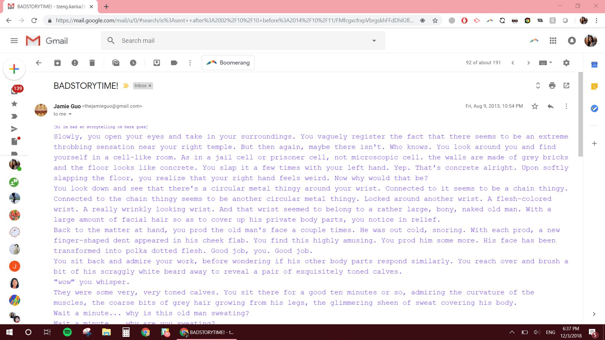

This is an interactive short film exploring human connection through social media.
Elements in the film include spoofs of Gmail, GChat, Facebook (FB), and Facebook Messenger, in which connections--or the lack of connection-- is exaggerated.
Between scenes, you have mouse and limited keyboard control of the narrator's desktop to explore.
SYNOPSIS
INTRO: narrator gives background-- likes to travel and keeps in touch with the majority of people though Facebook Messenger. Relies on wifi and data connection but that's okay.
2009: summer before middle school, was in Shanghai (12 hr difference), kept in touch with best friend over email back and forth. wrote choose-your-own-adventure stories back and forth to each other.
You can click through the Gmail and explore the email threads.
2012: middle school, used GChat with best friend and small group of friends.
2015: high school, used Facebook, huge community.
2017: using FB to meet new schoolmates and find new roommate.
2018: college, not really hanging out with college roommate anyway, high school friends are spread apart in US and global. keep in touch over FB and FB Messenger.
CURRENT: scrolling through Messenger but don't feel like messaging anyone.
looking for connection